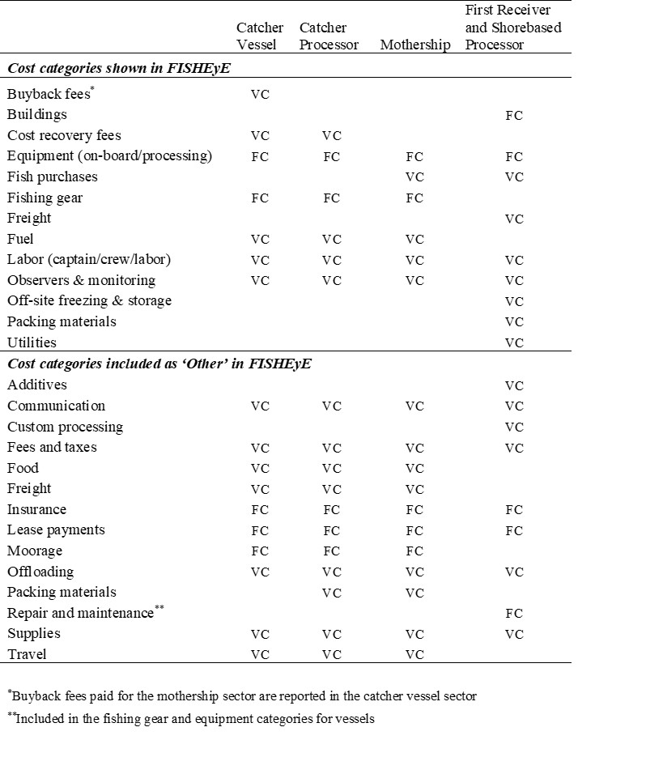

FISHeries Economics Explorer (FISHEyE)
Metrics
Please note that the availability of metrics will vary between sectors.
Vessel or processor characteristics:Characteristics of the vessels in the fleet or the processors that process groundfish. Metrics in this category describe vessels or processors based on demographic information as well as the number and diversity of fisheries they participate in.
- Number of vessels or processors:Number of vessels fishing or number of companies processing.
- Vessel length:Length of vessels (feet).
- Vessel replacement value:Estimate of what it would cost to replace the current vessel with a new vessel based on the most recent marine survey for the vessel.
- Vessel market value:Estimate of what the vessel could be sold for in its current condition based on the most recent marine survey for the vessel.
- Vessel horsepower:Horsepower of main engines.
- Number of fisheries:Count of fisheries (see Filters for more information about fisheries) that vessels participated in.
- Number of species purchased:Count of the number of species purchased.
- Proportion of revenue from catch share fishery:The proportion of a vessel’s total revenue that comes from fish caught in the West Coast Groundfish Trawl Catch Share Program (and pre-catch shares, the Limited Entry Trawl Fishery) compared to all West Coast fishing activities. User can select “Alaskan Fisheries” to calculate the proportion of limited entry/catch share fishery revenue compared to all fishing activities.
- Proportion of production value from West Coast groundfish:The proportion of a processor’s revenue from production that comes from fish in the catch share fishery.
- Revenue diversification:The Exponential Shannon Index measures income diversification of a vessel (or processor) across fisheries. A larger number corresponds to increased diversification.
Economic:Metrics within the Economic category summarize revenue and costs data reported in inflation adjusted dollars.
- Revenue:The total revenue generated by participation in the selected fisheries. This metric captures changes in total harvest volume and ex-vessel prices.
- Variable cost:Costs that vary with the level of participation in a fishery. The highest variable costs for vessels include fuel and labor payments. Fish purchases are the highest variable costs for processors.
- Fixed cost:Costs that do not vary with the level of fishing participation or do not vary as directly as variable costs with the level of participation during a given year. The EDC program collects four types of fixed costs for catcher vessels:
1) New
and used vessel and on-board equipment (includes all electronics, safety
equipment, and machinery not used to harvest fish)
2)
Fishing gear (includes nets, doors, traps, pots, cables, and fishing machinery
used for the West Coast fisheries)
3)
Processing equipment (includes any equipment used to process or head and gut
fish on board the vessel) and
4)
Other fixed costs such as moorage, insurance, and lease permits.
- Variable cost net revenue (VCNR):Revenue minus variable costs. VCNR is a measure of the operating profit of the average vessel.
- Total cost net revenue (TCNR):Revenue minus variable and fixed costs. Over many years, TCNR is a measure of long-term profitability. In any given year, a vessel may have a large fixed cost expense (such as a new engine) which may lead to a negative or unusually low TCNR.
A note about net revenue:The EDC forms capture costs that are directly related to vessel fishing operations, and do not include other expenses such as vehicles or office costs that may be related to the fishing business. Therefore, the net revenue reported here is likely an overestimate of the true net revenue.
Labor:Distribution of benefits and costs among crewmembers and other employees/workers.
- Number of crew:Number of crew positions is a lower bound for employment in the fishery because there is likely turnover throughout the year. For catcher-processors and motherships this value includes processing and non-processing crew.
- Number of workers:Number of individual production workers who worked at the facility in a given year, rather than the number of positions.
- Number of crew-days:Measure of effort calculated by the number of days at sea multiplied by the number of crew.
- Crew wage per year:Annual crew wage per crewmember.
- Crew wage per day:Daily wage paid to a crewmember operating in the limited entry/catch shares fishery.
- Hourly compensation:Hourly compensation paid to a processing worker in the West Coast groundfish fishery.
- Crew wage per dollar revenue:Total cost of crew wages per dollar of ex-vessel revenue.
- Revenue per crew-day:Revenue divided by crew-day, where crew-days are calculated as days at sea multiplied by number of crew per vessel. This metric is a measure of productivity (in terms of revenue generation) of crew.
Costs:Variable and fixed costs by sub-category.
- Variable costs:Costs that vary with the level of participation in a fishery.
- Fixed costs:: Costs that do not vary with the level of fishing participation or do not vary as directly as variable costs with the level of participation during a given year.
Fixed costs (FC), variable costs (VC) and other costs (AS IS) are described by sector below:

A note about total costs:There are a variety of costs that are associated with operating a vessel or processing facility that are not requested on the form because it is difficult to determine the share of the cost associated with the vessel or facility. These costs include items that can be used for activities other than fishing, or are too difficult to allocate to a particular vessel or facility in a multi-vessel company. These expenses include office space, vehicles, storage of equipment, professional fees, and marketing. In general, the EDC form aims to capture costs that are directly related to vessel or facility maintenance and fishing or processing operations, and not costs that are related to activities or equipment off the vessel or beyond the facility. For these reasons, the aggregated measures of costs presented likely here underestimate the true costs of operating a business.
A note about quota costs:Quota earnings and costs are currently excluded due to data limitations. It is not possible to convert quota data to the calendar year format like the rest of the cost categories and quota costs cannot be assigned to specific fisheries because one type of quota could be used in multiple fisheries. Additionally, many quota trades are non-cash transactions and therefore cannot be included in the calculations.
Impacts:Income and employment impacts for the West Coast overall.
- Income impacts:Income impacts generated by the selected vessels for activities in the selected fishery. Impacts are for the West Coast overall.
- Employment impacts:Number of jobs generated by the selected vessels for activities in the selected fishery. Impacts are for the West Coast overall.
Impacts are currently only available for catcher vessels (both vessels that deliver shoreside and at-sea to motherships). Please contact Jerry Leonard at jerry.leonard@noaa.gov for impacts associated with the other participant types and sectors.
Please refer to this document for more information about impacts.
Other:These metrics describe effort, productivity, inequality, and the temporal and spatial distribution of landings.
- Days at sea:The number of days at sea.
- Fuel use per day:Fuel use (gallons) per vessel per day.
- Speed while fishing:Speed (knots) while fishing.
- Gini coefficient:Measures the degree of catch share revenue concentration among vessels. A value of zero would represent all vessels earning the same revenue, and a value of one would represent one vessel earning all revenue.
- Share of landings by state:Share of landings (deliveries) by all vessels, by whiting vessels, and by non-whiting groundfish vessels in each state or at-sea. Shares are in terms of revenue. When selecting the State summary variable, this metric shows the share of landings in each state for vessels that homeport in the selected state. This selection highlights that vessels may deliver fish in multiple states.
- Seasonality:The date on which 50% of the total volume of catch was landed in the fishery.